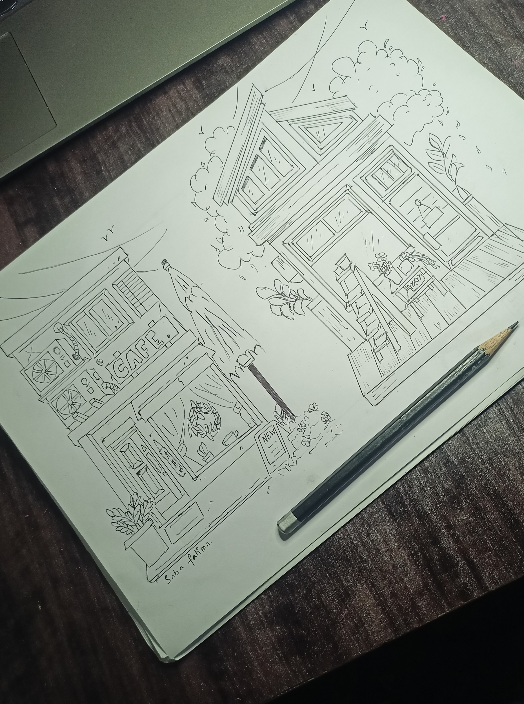

Painting
Painting, to me, is a personal escape. It’s how I express thoughts and emotions that words can’t capture. Each stroke, each color, reflects a feeling or idea, turning the canvas into a piece of me. It’s calming, freeing, and deeply personal.
